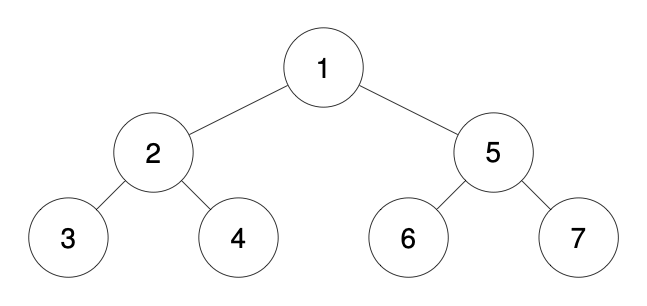
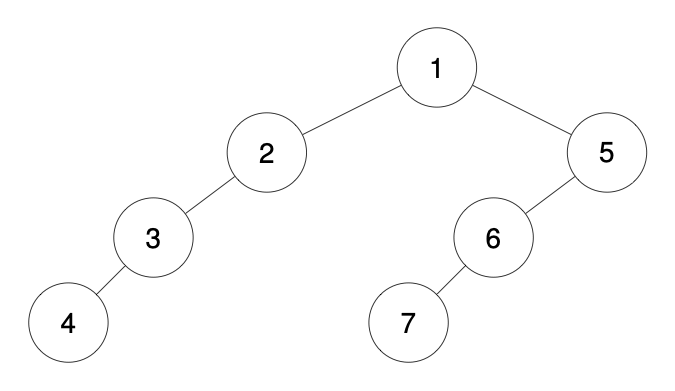
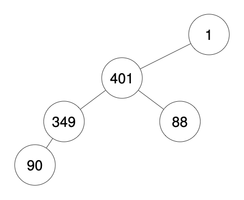

| Category | Difficulty | Likes | Dislikes |
|---|---|---|---|
| Algorithms | Hard | 2279 | 69 |
google | microsoft | facebook | amazon
We run a preorder depth-first search (DFS) on the root of a binary tree.
At each node in this traversal, we output D dashes (where D is the depth of this node), then we output the value of this node. If the depth of a node is D, the depth of its immediate child is D + 1. The depth of the root node is 0.
If a node has only one child, that child is guaranteed to be the left child.
Given the output traversal of this traversal, recover the tree and return its root.
Example 1:

Input: traversal = "1-2--3--4-5--6--7"
Output: [1,2,5,3,4,6,7]Example 2:

Input: traversal = "1-2--3---4-5--6---7"
Output: [1,2,5,3,null,6,null,4,null,7]Example 3:

Input: traversal = "1-401--349---90--88"
Output: [1,401,null,349,88,90]
Constraints:
[1, 1000].1 <= Node.val <= 109